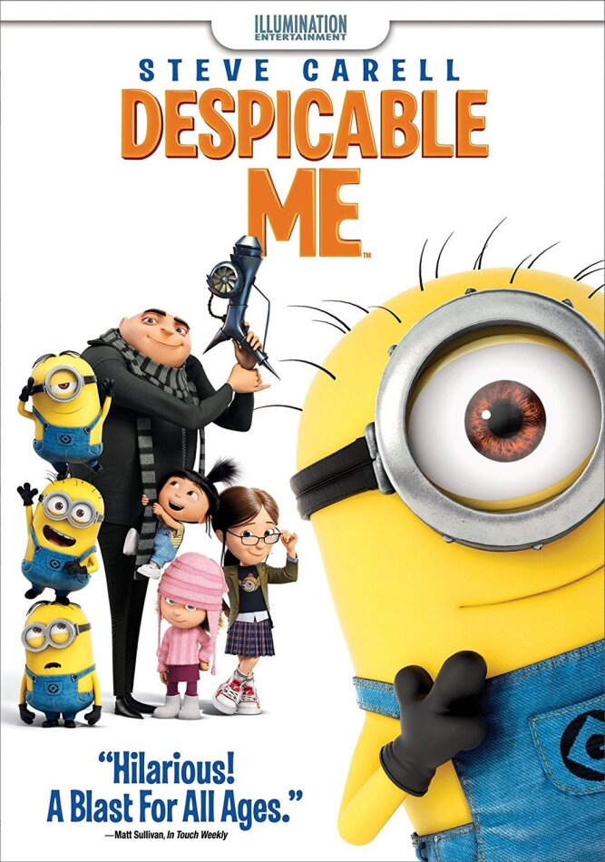
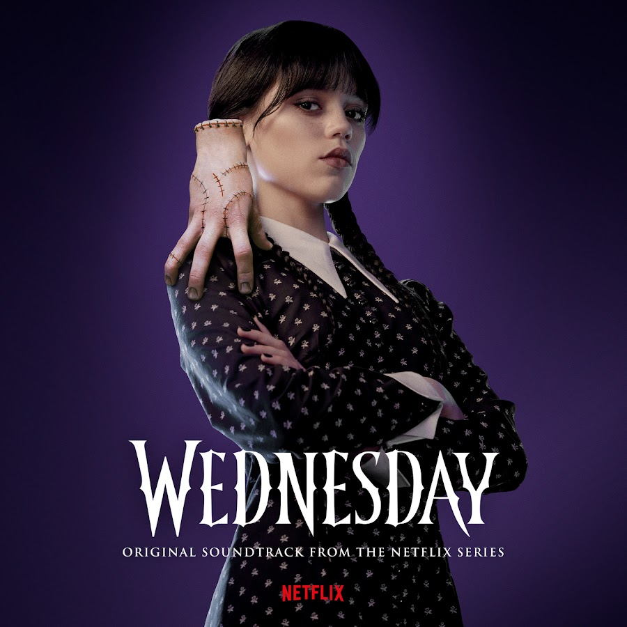
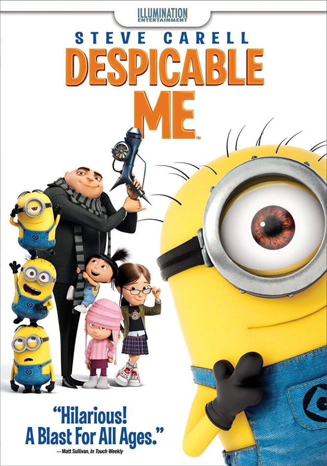
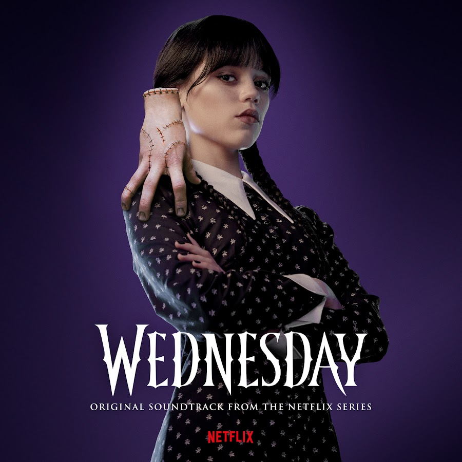
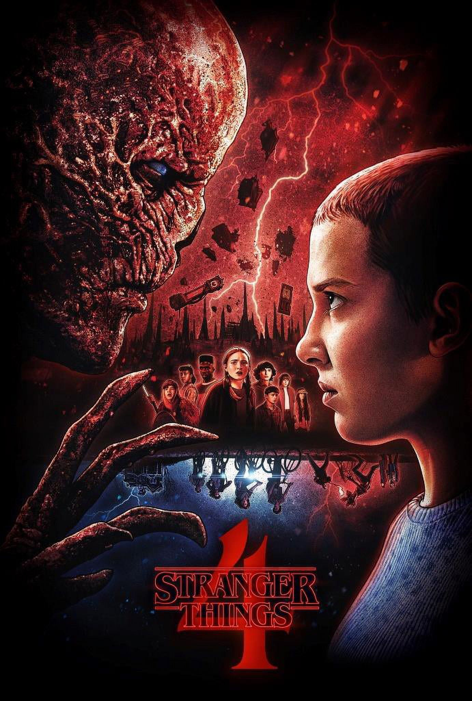
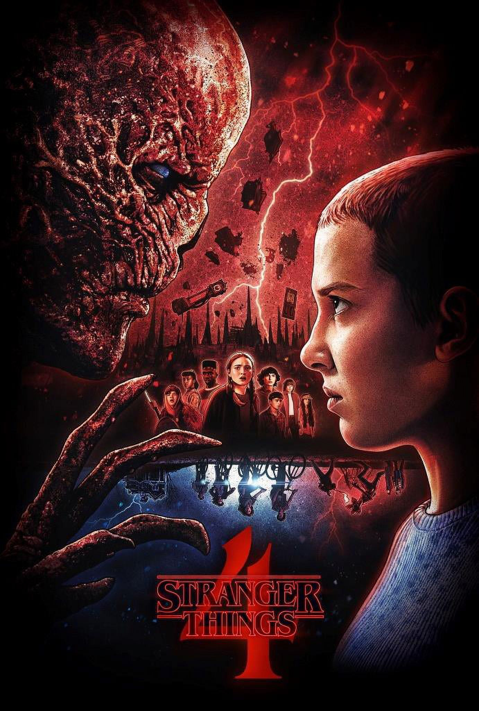
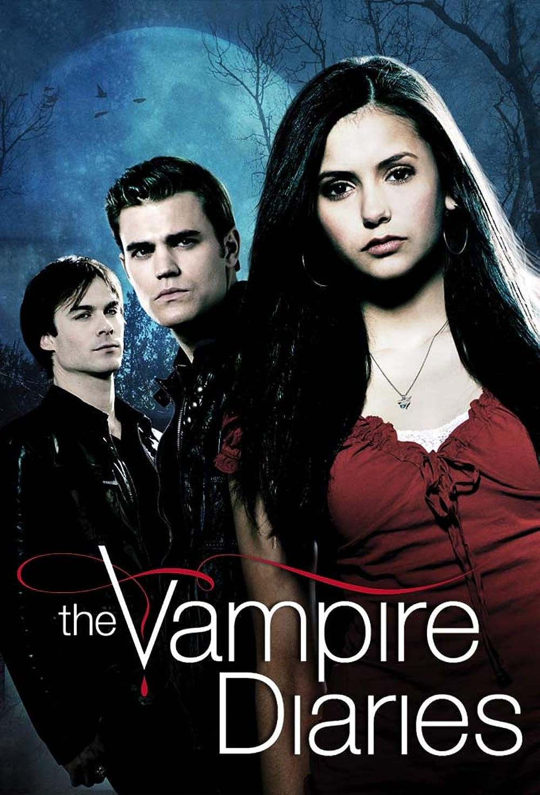
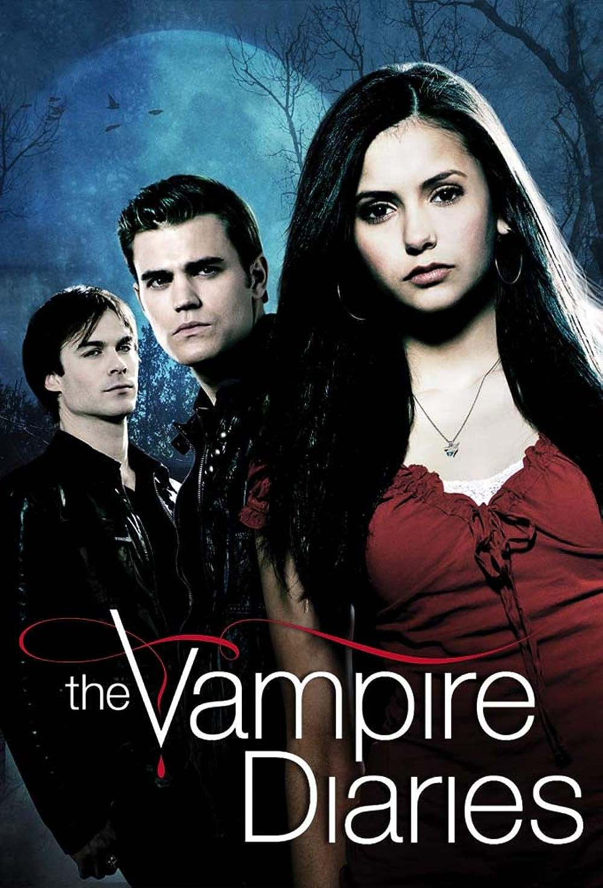

Furiosa: A Mad Max Saga
WATCH EPISODE 1 NOW
Furiosa: A Mad Max Saga, the fifth film in the franchise, is a 2024 post-apocalyptic action film
directed by George Miller and written by Miller and Nico Lathouris.
It is a prequel to Fury
Road; Miller said that while the franchise has "no strict chronology," it "probably" takes place
after Beyond Thunderdome. The film stars
Anya Taylor-Joy as Furiosa and Chris Hemsworth as her
adversary, the warlord Dementus; in addition, Jacob Tomuri portrays Mad Max in a cameo
appearance.
In this film, Furiosa is kidnapped by Dementus's Biker Horde, which sells her to Immortan Joe. Over
the following decade, she trains as a soldier and mechanic
so that she can take revenge on
Dementus for killing her mother.
 



 

 
